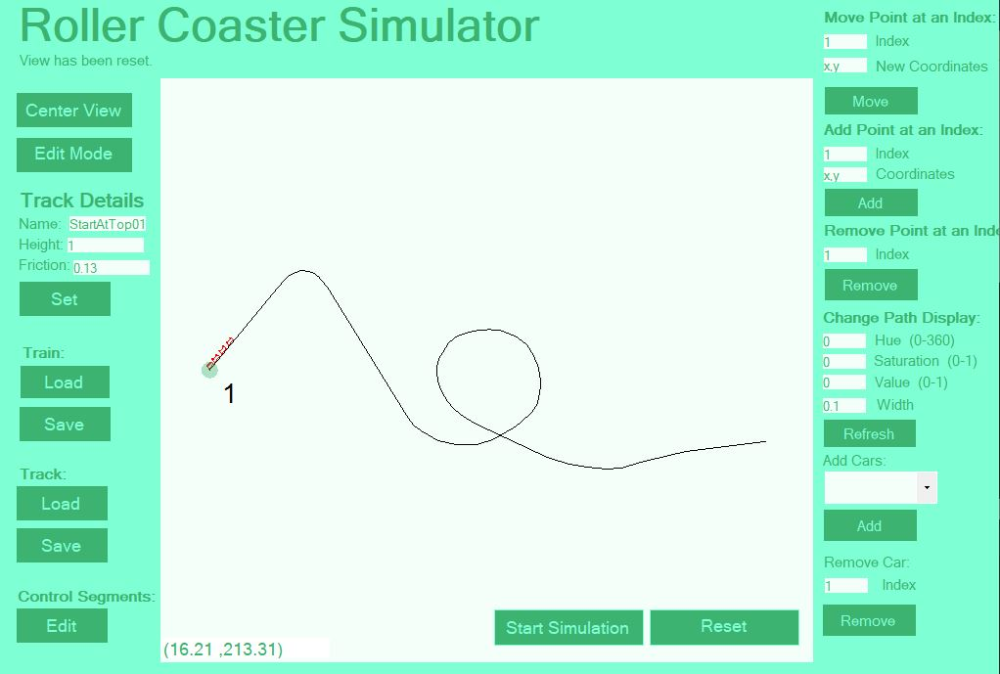
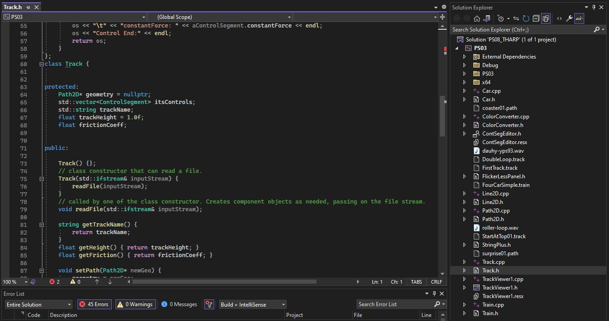

C++ Roller Coaster Simulator
Creating an Object Oriented C++ program to edit roller coasters
C++ for Engineerings, January - May 2021
About the Project:
This roller coaster simulation was coded in C++ as a project for a C++ for Engineers course.
My job was to model the kinematics of a roller coaster within code and make a user interface to
'create a useful tool to represent this model. Most of this project used object-oriented programming
by treating each element in the simulation as its own class. Below is a demonstration of all its
features and capabilities.

About the Code
This roller coaster simulation was coded in C++ as a project for a C++ for Engineers course.
My job was to model the kinematics of a roller coaster within code and make a user interface to
'create a useful tool to represent this model. Most of this project used object-oriented programming
by treating each element in the simulation as its own class. Below is a demonstration of all its
features and capabilities.